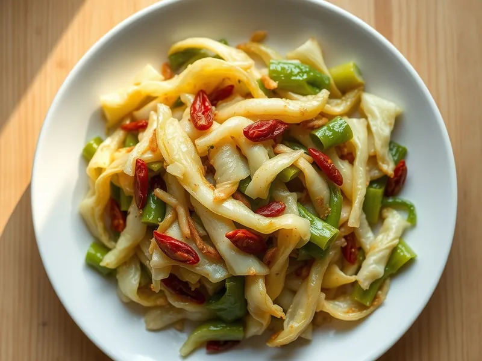

Капуста, жаренная по-китайски с чесноком и соевым соусом
Хрустящая капуста за 10 минут на сильном огне с чесноком, уксусом и соевым соусом
15 мин2 порц.246 ккал на порциюБ 7 · Ж 15 · У 20Азиатская кухня
Открыть в приложении: порции, таймеры, список покупок
Продукты на 2 порц.
- Капуста белокочанная600 г
- Чеснок3 зуб.
- Соевый соус2 ст. л.
- Рисовый уксус1 ст. л.
- Сахар1 ч. л.
- Растительное масло2 ст. л.
- Острый перец молотый по желанию1 щеп.
- Кунжут по желанию2 ч. л.
Как готовить
- Разберите капусту на листья, удалите толстые прожилки и порвите руками на куски размером со спичечный коробок. Чеснок нарежьте тонкими пластинками. На это уйдёт 5 минут.
- Смешайте в чашке соевый соус, уксус и сахар до растворения сахара.
- Разогрейте масло в сковороде или воке на сильном огне, бросьте чеснок и острый перец и жарьте 30 секунд, пока чеснок не станет светло-золотым.
- Высыпьте капусту и жарьте 5-6 минут, постоянно перемешивая, пока листья не опадут и местами не подрумянятся, но останутся хрустящими.
- Влейте соус, перемешайте и прогрейте ещё 1 минуту на сильном огне. Посыпьте кунжутом и сразу подавайте.
Совет. Жарьте капусту небольшими партиями на очень горячей сковороде: если положить всё сразу, она пустит сок и стушится вместо обжаривания.